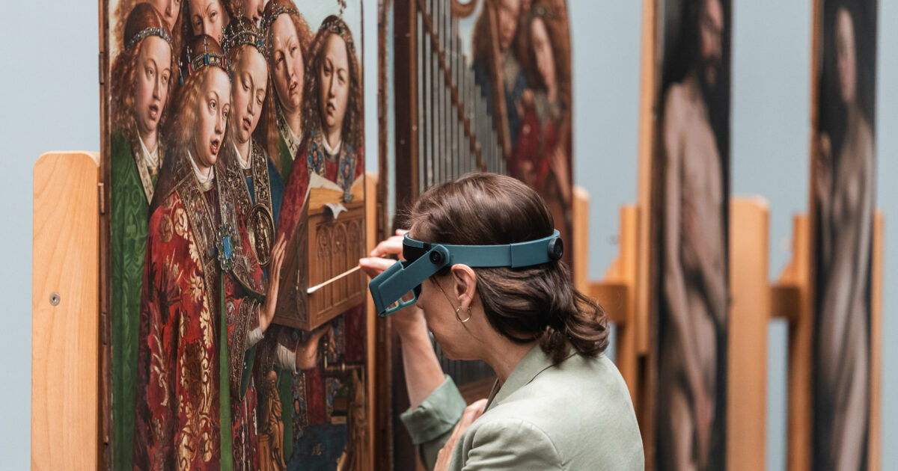

I

closes Dec '26
MSK Gent · KIK-IRPA studio · Photo: Martin Corlazzoli
Ghent · Tue–Fri only · ~6h
Two halves of a Van Eyck
A genuinely once-this-decade combination. Morning: stand 25 minutes alone with the lower five panels of the Adoration of the Mystic Lamb at St Bavo's, then descend to the crypt where AR glasses animate six centuries of theft, hiding and survival[4][5]. Afternoon: walk to MSK and watch KIK-IRPA conservators finish the upper register live in the glass-walled studio[2]. After December 2026 the panels return to the cathedral; the studio access does not repeat[29].
— Schedule —
10:00Coffee at the cathedral square; collect timed slot.
10:30St Bavo's — 25-min slot before the Mystic Lamb.
11:00AR crypt — animated history of the panels.
12:30Lunch (Patershol or Ganda).
14:30MSK Gent — restorers behind glass (Tue–Fri).
16:30Walk back along the Coupure.
Cost
€16 combo
Booking
days ahead
Window
to Dec '26
A working studio inside a museum — the conservation is real, not staged for the public.